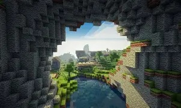

Building My First Minecraft World
September 27, 2026 by Chennelle Marshall

Minecraft gives players the freedom to create almost anything they can imagine. One of the things I enjoy most is starting with an empty area and slowly turning it into a place that feels like my own.
Building a world also takes patience because every structure starts with a few simple blocks. Whether I am creating a small house or working on a larger project, I enjoy seeing the final result come together.